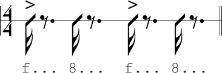
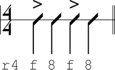
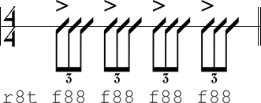
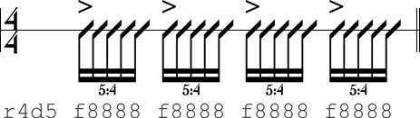
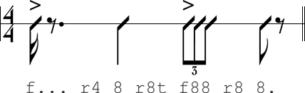
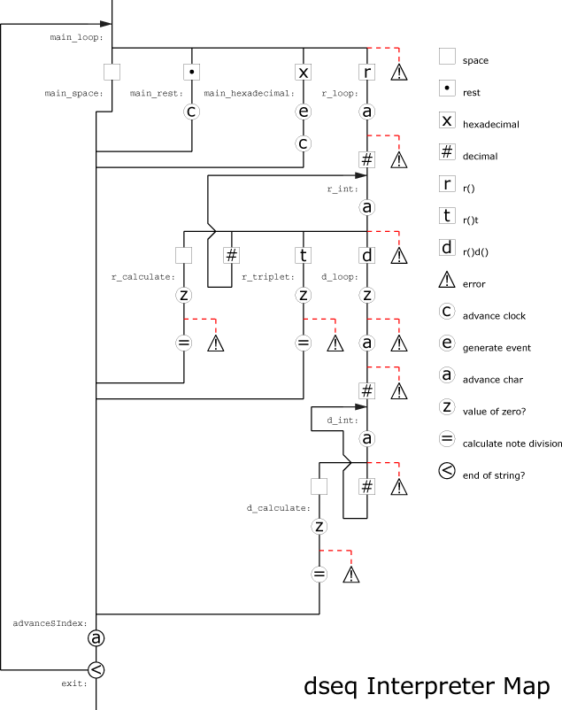

Contents
Download Examples
Introduction
Max V. Mathews, the father of computer music, once wrote "...all composers should be as lazy as possible when writing scores" (Mathews 1981). How can one achieve true score laziness? With the dseq drum machine micro-language.
Much work is required when writing a Csound score. As a general rule, one line of score code equals one note. A section of music is often cryptic and encompasses a significant chunk of code. Composing rhythms can be especially tedious as even a single-measure classic rock beat may have twelve score events, and thus, twelve lines of code. Making modifications to this single-measure is hard enough, let alone a full length piece of music.
This is where dseq comes into play. The dseq language is a text-based system of notation designed specifically for writing rhythms. The name dseq is derived from "drum sequencer." Dseq is designed to be simple, quick, and human-readable. The design of the language incorporates concepts from sources such as vintage drum machines, Triton's Fast Tracker II, grid-based MIDI editors, and the Radio-Baton Conductor Program (Wikipedia; Boulanger and Mathews 1997). The end result is a streamlined grammar that allows you to get your groove on with far fewer key presses.
Instead of following the traditional score method of one instrument event per line, musicians can write a horizontal dseq phrase consisting of several note triggers. Writing a dseq phrase is akin to creating drum patterns on a grid. Instead of using numbers to tell when a note begins, a note is played based on where in the phrase a trigger is placed. This is because a dseq phrase is a programmable grid.
The Form of the Article
The grammar and usage of dseq is simple. With this simplicity comes great complexity. This article covers the basics of dseq, many of the fine subtleties of the languages, and how the dseq language is implemented in Csound. There are three parts: Making Music with dseq, Designing dseq Synthesizers and The Csound dseq Interpreter. This article is written with the hopes that there is something here for everyone across all levels of experience.
Making Music with dseq focuses on issues that relate to the score. The syntax of the language is described in detail, along with examples of dseq phrases translated into rhythm notation (Wikipedia). The score interface to the dseq interpreter is presented along with an introduction to a small library of pre-built synthesizers so that you can start making music right away.
In Designing dseq Synthesizers, users will learn the ins and outs of dseq compatible synth engines. This section will equip you with the knowledge to modify existing dseq synths, convert existing instruments, and build new instruments from the ground up.
The Csound dseq Interpreter section outlines the basics of how a dseq phrase is translated into music.
A Note about Macros
The figures and code examples associated with this article
makes heavy use of Csound's macro preprocessor
(Wikipedia). Named macros are used in place of instrument numbers.
Macros are created with the define statement. In
figure 1, macros $dseq and $kick
are replaced with the numbers 1 and 2 when Csound runs the code. The
two i-statements are identical in Figure 1.
# define dseq # 1 # # define kick # 2 # ... i $dseq 0 1 $kick 0.5 0 0 0 0 "f... f... f... f..." i 1 0 1 2 0.5 0 0 0 0 "f... f... f... f..."
Figure 1 Macros are replaced with numbers. These two i-statements are equivalent.
The dseq interpreter is also kept in a separate file called dseq.csinstr. The
instrument is loaded into the score with the include,
as shown in Figure 2.
#include "./dseq.csinstr"
Figure 2 The macro includes the dseq interpreter located in the file dseq.csinstr.
Macros will not be discussed in this article. For further
information, read A
Micro Intro to Macros
at The Csound Blog
and John ffitch's chapter Using Csound's Macro Language
Extensions
in The Csound Book (Joaquin
2007; ffitch 2000).
Making Music with dseq
In this section, we'll explore the dseq language from the perspective of the Csound score. The dseq language, score interface, syntax and library of pre-built instruments will be covered in great detail.
Quick Start
Since this article is quite long, this section is provided so you can begin composing with the dseq language with little fuss. This brief overview will quickly have you creating drum patterns using the pre-built dseq instruments that are included with the supplemental download.
The file dseqQuickStart.csd
is a simplified dseq example in action designed specifically for you to
start manipulating dseq phrases. Within the score, you'll see four
groupings of i-events, each representing a single measure of four bars
of music. Three percussion instruments are used: kick, snare and hihat.
The quoted portions in pfield 10 are dseq phrases. These phrases are
translated into drum patterns as they are read from left to right by
the dseq interpreter, instr $dseq.
i $dseq 0 1 $hihat 0.5 0 0 0 0 "8.8.8.8.8.8.8.8." i $dseq 0 1 $snare 0.5 0 0 0 0 "....f.......f..." i $dseq 0 1 $kick 0.5 0 0 0 0 "f.......f......." i $dseq 4 1 $hihat 0.5 0 0 0 0 "8.8.8.8.8.8.8.8." i $dseq 4 1 $snare 0.5 0 0 0 0 "....f.......f..." i $dseq 4 1 $kick 0.5 0 0 0 0 "f.......f.8....." i $dseq 8 1 $hihat 0.5 0 0 0 0 "8.8.8.8.8.8.8.8." i $dseq 8 1 $snare 0.5 0 0 0 0 "....f.......f..." i $dseq 8 1 $kick 0.5 0 0 0 0 "f.......f......." i $dseq 12 1 $hihat 0.5 0 0 0 0 "8.8.8.8.8.8.8.8." i $dseq 12 1 $snare 0.5 0 0 0 0 "....f.......f..." i $dseq 12 1 $kick 0.5 0 0 0 0 "f.......f.8....."
Figure 3 Classic 4/4 rock beat with eighth note hi-hats. See dseqQuickStart.csd.
Notes are triggered when the dseq interpreter reads a hexadecimal character between 0 and F. The higher the hexadecimal character, the louder the triggered note will sound. A rest occurs when the interpreter reads a period. Each note trigger and rest has a note division equal to that of a sixteenth note. Each individual phrase in this example has sixteen notes and rests, equal to a single bar of music. Think of each phrase as a grid-based step-sequencer.
When you play dseqQuickStart.csd, try following the score while listening to the audio. The example is that of a classic 4/4 rock beat with eighth note hi-hats. Next, manipulate the dseq phrases by changing periods into hexadecimal characters and vice versa. Listen to the results. If you enter an invalid character, the dseq interpreter will print a message to the terminal window showing you where the error was encountered, and it will also inform you of which characters are valid at this point in the phrase.
This example only uses the default note division of a sixteenth note, and does not demonstrate how to change the note division. For examples on how to do this, render and study the file dseqRhythms.csd.
The dseq Language
The dseq language is a domain-specific
language as it is designed for, and intended to be
useful for, a specific kind of task (Wikipedia).
With dseq,
one can easily create rhythms quickly, efficiently, and in many cases,
human-readable. The trade off is that there are obvious limitations.
Users can program a dseq phrase that does a combination of four simple tasks: do nothing, trigger a note, rest, or change the resolution (division) of notes and rests. These correspond to the four dseq token-types:
- Space
- Note Trigger
- Rest
- Resolution
The dseq language also comes with a very compact list of valid
characters. There are only 20, case-insensitive glyphs: "
.0123456789abcdeftr".
Phrase
A phrase is a combination of none, some or all token-types and glyphs. The shortest phrase possible is an empty string. Phrases are not required to have a particular length, or represent a specific number of beats or measures. The length of a string is restricted to Csound's own limitations.
Space
A space character in the dseq language refers to the character associated with the space bar, and nothing else. A tab is not a valid glyph in the dseq language. Though a space does nothing, functionally speaking, it is useful for programming phrases that are more human-readable. Figure 4 shows a phrase where each quarter note is separated by two spaces.
"f... 8... f... 8..."
Figure 4 Proper use of space can make a phrase easier to read.
Note Trigger
When the dseq interpreter reads a hexadecimal character between 0 and F, an event to a synth instrument is scheduled (Wikipedia). The value of the note trigger is passed along to the synth, along with other information such as the tempo in seconds per beat, as well as the resolution of the note.
Hex Dec ----------- 0 = 0 1 = 1 2 = 2 3 = 3 4 = 4 5 = 5 6 = 6 7 = 7 8 = 8 9 = 9 A = 10 B = 11 C = 12 D = 13 E = 14 F = 15
Figure 5 Hexadecimal to decimal conversion chart.
The dseq interpreter is equipped with its own internal clock that keeps track of time by accumulating the division of every triggered note and rest. The internal clock always begins at 0 with every phrase. When an event is about to be generated, the internal clock's native beat-time is converted into time-in-seconds, and the event is scheduled in the future by this value.
Rest
A rest is represented by the period character in the dseq language. When the dseq interpreter encounters a period, the interpreter's internal clock is advanced by the current note resolution. For example, if the resolution is set to a quarter note, then the clock is advanced by one beat.
Resolution
The dseq interpreter has an internal variable that stores the resolution of note triggers and rests. This value defaults to a sixteenth note for every new dseq phrase. A user can change the resolution variable by calling the resolution function. Unlike note triggers, valid integers are in decimal notation, as opposed to hexadecimal.
The resolution function comes in three different varieties:
standard: r(x) triplet: r(x)t subdivision: r(x)d(y)
Figure 6 The three varieties of the resolution function.
The standard version of the resolution function accepts an
integer value. A value of 4 will set the resolution to a quarter note,
while a value of 8 sets the resolution to an eighth note. The standard
resolution equation is: r(x) = 4 / x. It is
worth pointing out that a quarter note equals one beat, explaining why
the numerator is set to 4.
The triplet version, as you would expect, transforms the
division into a triplet. For example, r8t
sets the resolution to eighth note triplets. The triplet equation is: r(x)t
= 8 / 3x.
The subdivision version is different than the other two as it
takes two arguments. The first argument that directly proceeds the r
works in a similar fashion to the standard version. The second argument
further subdivides the division. The the first half of the function
call r4d4 sets the division to a quarter
note. The second half, d4, divides the
quarter note division by four, setting the final division to a
sixteenth note. The subdivision equation is: r(x)d(y) = (
4 / xy ).
The syntax is a bit odd compared to how functions are written in other languages. There can be no spaces within a function call and a space character must be appended to the end of each resolution function. The parenthesis in figure 6 show where integers are plugged into the resolution function, but are not part of the resolution function's syntax. The value of the integers must also be greater than the value of 0.
"r4 " ; Valid. "r12 " ; Valid. "r8t " ; Valid. "r4d3 " ; Valid. "r13d313 " ; Valid. "r4" ; Invalid. Functions must be appended with a space. "r8tf..." ; Invalid. Functions must be appended with a space. "r0d3 " ; Invalid. Values must be greater than zero. "r4d0 " ; Invalid. Values must be greater than zero. "r(4)t " ; Invalid. Parenthesis not allowed. "rf " ; Invalid. Hexadecimal characters not allowed. "r4 d3 " ; Valid? Is "d" supposed to be a trigger or a divide?
Figure 7 Valid and invalid uses of the resolution function.
Rhythm Notation
Working with text-based notation can seem daunting, as at first glance it may seem completely non-intuitive. To help illustrate dseq notation, the five figures in this section compare dseq phrases against rhythm notation, with rhythms notated directly above the corresponding dseq note triggers. When the resolution function is used, you will see that the rhythm notation also reflects the note division change. You can hear each of these examples by rendering dseqRhythmNotation.csd.
In these examples, the notation assumes that values of note triggers are mapped to velocity. Only two velocities are used, 8 and F. The velocity of 8 is considered average velocity, while F is considered an accented trigger. Accent glyphs are placed above slashes where the dseq trigger is an F.
The phrase "f... 8... f... 8..." in
figure 8 shows a four-beat measure. Since the default resolution for a
dseq phrase is a sixteenth note, each trigger is displayed as a
sixteenth note rhythm. A grouping of three periods in the dseq notation
is translated into a dotted eighth rest. Notice the accent glyphs above
the slashes at beats one and three. These correspond to the F in the
dseq phrase.

Figure 8 A dseq phrase translated into rhythm notation.
The default resolution of a sixteenth note is reprogrammed to
equal a quarter note at the beginning of the phrase "r4 f
8 f 8" in figure 9. The proceeding triggers are
represented by quarter notes in the rhythm notation.

Figure 9 The division of the note is changed to a quarter note with the resolution function.
The triplet version of the resolution function changes the
note division to eighth note triplets in the phrase "r8t
f88 f88 f88 f88". The rhythm notation in figure 10 shows
four eighth note triplet groupings that correspond to dseq notation.

Figure 10 The division is set to eighth note triples.
The phrase "r4d5 f8888 f8888 f8888 f8888"
in figure 11 demonstrates an irrational rhythm with the equation r(x)d(y).
The four groupings of quintuplets in figure 11 is possible with dseq
because a quarter note can be divided into five equal parts using the
subdivision function.

Figure 11 A quarter note is subdivided into five equal parts.
The final rhythm notation example in figure 12 shows how
multiple calls to the three variations of the resolution function can
be mixed and matched within a single dseq phrase. In the phrase "f...
r4 8 r8t f88 r8 8.", the note division starts with the
default sixteenth note division, and then changes into a quarter with r4,
an eighth note triplet with r8t, and finally
an eighth note with r8.

Figure 12 Four different resolutions are used in a single phrase.
Vertical vs. Horizontal
One of the benefits of composing with dseq phrases, as opposed to conventional Csound score notation, is that these phrases are often much more human-readable at a glance. Examine the score code in figure 13 and try to reconstruct the drum pattern in your head.
i $kick 0 0.35 0.26 i $hihat 0 0.07 0.4 i $hihat 0.5 0.07 0.2 i $snare 1 1 0.26 i $hihat 1 0.07 0.33 i $hihat 1.5 0.07 0.2 i $kick 2 0.35 0.4 i $hihat 2 0.07 0.4 i $kick 2.5 0.35 0.33 i $hihat 2.5 0.07 0.2 i $hihat 3 0.07 0.33 i $snare 3 1 0.26 i $hihat 3.5 0.07 0.2
Figure 13 Classic rock drum pattern written in conventional score code.
Though it isn't impossible to decipher, it does require a bit of time and concentration to dissect the pattern. Now take a look at figure 14 and once again try to reconstruct the drum pattern in your head.
i $dseq 0 1 $hihat 0.5 0 0 0 0 "c.6. a.6. c.6. a.6." i $dseq 0 1 $snare 0.5 0 0 0 0 ".... 8... .... 8..." i $dseq 0 1 $kick 0.5 0 0 0 0 "8... .... c.a. ...."
Figure 14 Classic rock drum pattern written horizontally with dseq syntax.
At this point, it should become apparent that placing drum triggers on a horizontal grid is easier to read than the traditional score code equivalent. Once you become more familiar with the syntax of the dseq language, you will be able to read a grouping of dseq phrases as quickly as you would be able to read a pattern in a GUI grid editor.
Another advantage of the dseq language is that it can also significantly reduce the amount of typing when composing. The traditional score code requires thirteen lines of code. The dseq translation requires only 3 lines of code. Imagine composing percussion for 32 bars of music for each system.
Though dseq phrases, as a general rule, require less code, there are drawbacks. In the traditional model, every note can have a unique value for each parameter, where parameters in dseq are fixed for each phrase. The resolution for dseq trigger values is only 16 steps, while the traditional approach can utilize full precision.
The Score Interface
A dseq phrase is only one component of a multi-component score
interface. The dseq interpreter, instr $dseq,
must also accept the targeted synth instrument number, five specially
designated user-defined parameters, and the current tempo of the score.
The dseq interpreter expects to receive ten parameters. In this
section, we'll break down the score interface and discuss the
responsibility of each pfield.
i dseq start 1 instr param1 param2 param3 param4 param5 "...."
Figure 15 The dseq score interface.
Figure 16 displays a table for each pfield in the dseq score interface, accompanied by a brief description.
| i | A Csound score i-event. |
| dseq | Instrument number of the dseq interpreter. |
| start | Start time of dseq phrase. |
| 1 | P-field 3 should always be set to one. |
| instr | The instrument number of the target synth instrument. |
| param1 | User-defined parameter 1 passed to synth instrument. |
| param2 | User-defined parameter 2 passed to synth instrument. |
| param3 | User-defined parameter 3 passed to synth instrument. |
| param4 | User-defined parameter 4 passed to synth instrument. |
| param5 | User-defined parameter 5 passed to synth instrument. |
| "...." | A dseq phrase of music. |
Figure 16 Description of each pfield of the score interface.
Starting the dseq interpreter is just like turning on any
other instrument in the score, by specifying the letter i in pfield 0,
indicating an instrument event. Pfield 1 is the instrument number of
the dseq interpreter. Remember that macros are translated into numbers,
so that $dseq is equivalent to 1. Pfield 2 is the start time of the event in beats.
Pfield 3 is a peculiar case. From a user's perspective, all you need to know is that you should always specify the value 1 when calling the dseq interpreter. Learning why will give you a greater understanding about how time and tempo works in Csound. Normally, pfield 3 is used to specify the duration of an instrument event. However, the dseq interpreter uses pfield 3 for a different purpose: passing the current tempo of the score, in seconds-per-beat, to the dseq interpreter. This is achieved by specifying the value 1 in pfield 3.
Though score durations are specified in beats, Csound's fundamental time unit is in seconds. The beat-time value specified in pfield 3 is translated into seconds before the i-event begins. When the tempo of the score is 60 beats-per-minute (BPM), durations are not translated as one beat equals one second. When the tempo is 120 BPM, one beat is translated into 0.5 seconds, as the tempo is twice as fast. Specifying the duration as 1 has a secondary purpose, as the translated value happens to be the tempo in seconds-per-beat.
The number of the targeted synth instrument is specified in pfield 4. Macros are used in the code examples in favor over numbers, making the code easier to read.
Pfields 5 through 9 are designated for user-defined parameters. When the dseq interpreter generates an i-event for the target synth instrument, the values specified in pfields 5 through 9 are passed unmodified to the target instruments. The synth instrument assigns purpose to the parameters, with these purposes varying, often dramatically, between different synths. If a particular parameter is not utilized by the target instrument, a value must still be entered in the score. The common practice is to enter 0 for null parameters.
The last field, pfield 10, is where the user composes a dseq phrase. The phrase must be entered in as a string, surrounded by quotes.
Synth Instruments
The dseq interpreter is purely a text-based sequencer and does not generate any sounds of its own. In order to generate sounds using dseq, a compatible synth engine is required. A synth engine exists as its own Csound instrument, with its own set of user-defined parameters.
From the perspective of the dseq interpreter score interface, users need to be aware of the nature of the five user-defined parameters for the synths they target. A properly documented synth instrument will describe each user-defined parameter in the instrument header. Use the knowledge found in the header to pick useful values.
The only tricky thing about user-defined parameters is that the range of the pfields for the score interface is different than the interface of a synth engine. In the score, user-defined parameters are specified between pfields 5 and 9. The synth engines, however, receive these values in pfields 7 through 11.
The supplemental download comes with a pre-packaged library of instruments in the file dseqLibrary.csd. Figure 17 shows the library's quick guide, listed in the score.
/* i $dseq start 1 $sineKick amp freq freqr decay trans "." i $dseq start 1 $kick amp - - - - "." i $dseq start 1 $snare amp - - - - "." i $dseq start 1 $hihat amp decay - - - "." i $dseq start 1 $gaussBurst amp sus pan - - "." i $dseq start 1 $triKick amp freq freqr time pan "." i $dseq start 1 $lofiSnare amp time snap pan - "." i $dseq start 1 $fugwhump amp time punch tune subtune "." i $dseq start 1 $fmBumper amp table - - - "." i $dseq start 1 $clapper amp pchr tight snap pan "." i $dseq start 1 $simpleRez amp basepch - - - "." i $dseq start 1 $blue amp freq lfo nharm pan "." i $dseq start 1 $black amp freq start end bw "." i $dseq start 1 $copper amp lfo start end bw "." i $dseq start 1 $psyKick amp freq reverb - - "." i $dseq start 1 $psyBass amp basepch reverb - - "." i $dseq start 1 $fofVoice amp basepch att sus decay "." */
Figure 17 Quick guide in dseqLibrary.csd.
Synth engines may have other quirks to them than just the user-defined parameters. The dseq interpreter, in addition to the parameters, passes information about the tempo, values of triggered notes, and the resolution of triggered notes. Depending on the design, these extra bits of information may influence the behavior of the synth in ways which are non-obvious. Though dseq was designed as a drum machine language, synth engines can produce sounds that are beyond percussion-styled instruments.
Error Messaging System
The dseq interpreter is equipped with an error messaging system. When the interpreter encounters an unexpected character or invalid value, a message about the error is printed to the console or terminal window. The interpreter then terminates itself, ignoring the rest of the phrase.
The message provides useful information about the error. The entire phrase is printed to the screen. Underneath the phrase, the carat (^) points to the precise character or value in the phrase that caused the error. The error messaging system additionally prints a list of valid token-types for this point in the phrase. The messaging system only reports the first bug encountered.
dseq error. Invalid character detected:
f.f. r8t f88 r16f.8. f.8.
^
Expects ' ', t or d here.
Interpreter terminated.
Figure 18 An example of an error message.
By default, the error messaging system is turned on. If you
would like to disable these messages, set the variable imessages
to 0 near the top of the dseq interpreter.
For more examples of the error messaging system, render and study dseqErrors.csd.
Designing dseq Synthesizers
Designing an instrument compatible with the dseq language is similar to designing a typical Csound instrument, except with a few extra quirks and a pre-defined interface. An instrument may be built by modifying an existing dseq synth, adapting an instrument, or from scratch, using the dseq template instrument found in dseqDesign.csd. These synths may or may not utilize data generated and passed from the dseq interpreter, including the tempo, resolution of triggers, and the values of triggers.
Synth Engine Interface
A compatible dseq synth engine receives its input from the dseq interpreter. Some of the data being received from the interpreter was passed to the interpreter in the score. A compatible dseq engine is required to receive the duration of one k-frame, the tempo, the resolution of the triggered note, the value of the triggered note, and five user-defined parameters. This is true whether or not the instrument utilizes every input. Each of these pieces of data must be received on pre-defined pfields, as demonstrated in figure 19.
ikf = p3 ; One k-frame in seconds ispb = p4 ; Seconds per beat ires = p5 ; The resolution of the beat. One beat = 1 ivalue = p6 ; Numeric value of the note trigger iudp1 = p7 ; User-defined parameter 1 iudp2 = p8 ; User-defined parameter 2 iudp3 = p9 ; User-defined parameter 3 iudp4 = p10 ; User-defined parameter 4 iudp5 = p11 ; User-defined parameter 5
Figure 19
The dseq template instrument header. See instr
$dseqTemplate in dseqDesign.csd.
One parameter that is almost always present in an instrument is the duration of the note. The duration is a special case that must be handled with care by the instrument designer, and can be implemented in multiple ways. You will read about this in the section Time and Duration.
When designing instruments, more often than not, you will find
that not all available pfields are necessary. When a pfield is not
used, you should still set it to a variable to avoid warning messages
in the console or terminal window. The standard practice is to assign
an unused value to the variable inull. Not
only will this eliminate a warning, but it gives a clear message to
those using the instrument that this particular parameter does nothing.
Value
When a note is triggered, the value of the hexadecimal integer is passed to the synth. The dseq interpreter only sends integers between 0 and 15. Synth instruments are responsible for translating this range into what ever makes sense for the synth.
Amplitude
The common use for a triggered note value is applying it to
amplitude. The range of 0 to 15 is arbitrary, and must be scaled or
biased before assuming a meaningful amplitude value. For example, let's
say we wanted to scale this range so that it is between 0 to 32768. One
approach would be to divide the value received at pfield 6 by 15. The
range would now be normalized between 0 and 1. Assuming Csound is
rendering at 16-bit, multiplying the new value by 0dbfs
will scale the range to 0 to 32768. However, there would still only be
16 points of possible resolutions.
ivalue = p6 ... iamp = ( ivalue / 15 ) * 0dbfs
Figure 20
See instr $valueAmp in dseqDesign.csd.
Pitch
Though trigger values are designed with amplitude in mind, they are treated as generic numbers without a purpose. Their purpose is defined by the synth instruments that receive them. This allows trigger note values to be applied to other synth parameters, such as panning, sample selection, or even pitch.
Figure 21 demonstrates how to apply values to pitch. A
user-defined parameter is designated as the base pitch. The trigger
note value is multiplied by 0.01 and added to the base pitch. The cpspch
opcode then translates this number into a frequency.
ibasepch = p8 ; Base Pitch ... ipch = cpspch( ibasepch + ( 0.01 * ivalue ) )
Figure 21
See instr $valuePitch in dseqDesign.csd.
User-Defined Parameters
A set of user-defined parameters in a dseq synth is specifically tailored for that synth. They serve no purpose until a purpose is assigned to them. The standard dseq interpreter allows up to five parameters to be passed as pfields. Though there are ways to pass even more without modifying the dseq interpreter. Solutions include storing parameters in an ftable, in global variables, or in a software bus such as zak or chn.
Standard Parameters
Synth instruments receive user-defined parameters in pfields
7 through 11. These same parameters are originally mapped to the dseq
interpreter score interface as pfields 5 through 9. An instrument can
be designed to use up to five pfield parameters. When parameters are
not used, the best practice is to assign them to the variable inull
to avoid warnings from the console or terminal window and to inform
users that these parameters do nothing.
iamp = p7 ; Amplitude ipitch = p8 ; Pitch ipan = p9 ; Pan inull = p10 inull = p11
Figure 22
See instr $paramStandard in dseqDesign.csd.
Global Parameters
A synth engine is not limited to the five user-defined pfield values. Users can design an engine to read global variables as displayed in figure 23.
; Below the orchestra header giamp = 0.5 gipitch = 9.00 gipan = 0.9 ... ; In the synth Engine iamp = giamp ipitch = gipitch ipan = gipan
Figure 23
See instr $paramGlobal in dseqDesign.csd.
Table Parameters
Using ftables to store more than five parameters is perhaps the most practical approach. Not only do tables allow for more than five parameters, but they allow an extremely large number of parameters.
itable = p8 ; Table storing parameters ... ipitch table 0, itable ; Pitch iwave table 1, itable ; Wave shape ivibfreq table 2, itable ; Vibrato frequency ivibamt table 3, itable ; Vibrato amount, in half steps ivibwave table 4, itable ; Vibrato wave shape iatt table 5, itable ; Attack of envelope ipan table 6, itable ; Pan
Figure 24
See instr $paramTable in dseqDesign.csd.
Time and Duration
The duration of a dseq synth instrument can be specified or derived in many ways. Duration maybe be absolute, relative, fixed, follow the division of the note trigger, or a combination of all of the above. When the dseq interpreter generates an event, information about the tempo of the score and the resolution of the triggered note is passed to the targeted instrument. These two bits of information, or any additional information hardwired into the synth or passed as a parameter, ultimately defines the duration of a triggered note event.
ispb = p4 ; Seconds per beat ires = p5 ; The resolution of the beat. One beat = 1
Figure 25 Tempo and note division information received from the dseq interpreter.
Absolute Time
A synth that works in absolute-time (time-in-seconds)
disregards any information about the tempo and resolution. In the case
where a fixed duration is desired, designers can hardwire a value
directly into the synth. In figure 26, the duration is fixed to a value
of 1 second. The variable ikf receives the
duration of one k-frame. In order to extend the duration longer than
one k-frame, the opcode xtratim is used. This
opcode adds time to the total duration of the event. Before xtratim
is executed, the duration is one k-frame long. In order to make sure
the final duration is one second long, pass idur - ikf
to xtratim.
idur = 1 xtratim idur - ikf ; Extend time to idur
Figure 26
See instr $durFixed in dseqDesign.csd.
Designers also have the option of assigning one of the user-defined parameters to duration.
idur = p8 ; Duration in seconds ... xtratim idur - ikf ; Extend time to idur
Figure 27
See instr $durAbsolute in dseqDesign.csd.
Beat Time
Designers can use the seconds-per-beat value received by pfield 4 to set the duration relative to the tempo. In order to treat a value as if it were written in beat-time, multiply the value by the seconds-per-beat value, as shown in figure 28.
ispb = p4 ; Seconds per beat ... idur = p8 ; Duration in beats ... idur = idur * ispb ; Convert to relative time xtratim idur - ikf ; Extend time to idur
Figure 28
See instr $durBeatTime in dseqDesign.csd.
Note Division
The dseq interpreter passes the division of the trigger. Users can use this value to set the duration relative to the note division. The code in figure 29 sets the duration of the event to the resolution of the trigger. Since note durations are tempo dependent, both the second-per-beats value and the resolution of the note is required to calculate the division.
ispb = p4 ; Seconds per beat ires = p5 ; Resolution of trigger ... idur = ispb * ires ; Set duration to note division xtratim idur - ikf ; Extend time to idur
Figure 29
See instr $durDivision in dseqDesign.csd.
The Csound dseq Interpreter
The standard Csound dseq interpreter is much more involved than a standard Csound instrument. Explaining every nuanced detail would require an article in itself. Instead of trying to cover every aspect of the interpreter, a generalized explanation of how it works along with methods of deconstructing the instrument will be provided.
Host Language Implementation
The dseq drum machine micro-language is only the string of text that exists between the two quotes. By itself, it does nothing, as it is nothing more than a strict specification for notating basic rhythms. The language must be implemented inside a host language. Since the dseq language is very limited, the host language must be responsible for everything dseq is not designed to do. For example, dseq is completely oblivious to the concept of tempo, leaving the host language to implement tempo in a fashion that makes sense.
The host language, as it relates to this article, is Csound. The standard Csound dseq interpreter is only one possible interpreter out of many. For synth compatibility purposes, the standard Csound dseq interpreter found in dseq.csinstr should be considered the defacto version, though custom versions are highly encouraged.
Where does dseq start and end?
The lines between the dseq language and the Csound implementation are blurry. The following list describes the responsibilities of both the dseq language and host language implementation:
The dseq language responsibilities:
- Triggering events.
- The timing of new events in relation to a phrase.
- The current division of note triggers and rests.
- The value of a note event.
- Rhythms.
Host language responsibilities:
- Generating i-events.
- The tempo.
- Global timing.
- Instrument to play.
- Parameters supplied to synth instruments.
- Any other issues related to the host.
Interpreter Internals
The internals of the dseq interpreter consist of four main components: the phrase reader, an internal clock, the resolution, and the error messaging system.
The phrase reader translates a phrase into events. The reader reads a phrase one character at a time, from left to right. This is the mind, body and soul of the interpreter, as it encompasses everything for which the interpreter is responsible.
The internal clock keeps track of time in beat-time. Every time a note is triggered or a rest is encountered, the clock accumulates the value of the current note division. The internal clock resets to zero for every new phrase. When a note is triggered, the value of the internal clock is converted into time-in-seconds. An instrument event is then scheduled by this amount of time in the future.
The resolution is a variable that stores the division of notes and rests in beat-time. The resolution is modified when any of the three resolution function variations are encountered by the phrase reader. The internal clock uses this value when accumulating time. The default value for every new phrase is a sixteenth note.
The error messaging system is responsible for reporting any syntax or value errors encountered by the phrase reader. After a message is written to the console or terminal window, the interpreter process is terminated, ignoring the remaining portion of the phrase.
Control Flow
The interpreter makes heavy use of conditional branching.
Using the if and igoto
statements, the phrase reader will jump to different blocks of code
based on the current character. Figure 30 shows the branching
possibilities in main_loop:. For example, a
space character causes the reader to jump to main_space:.
If the character is not a space, rest, hexadecimal character, or the
resolution function "r", then the reader jumps to err_main_loop:.
main_loop:
; Read character from string
Schar strsub Sphrase, iSindex, iSindex + 1
; Space " "
icompare strcmp Schar, " "
if( icompare == 0 ) igoto main_space
; Rest "."
icompare strcmp Schar, "."
if( icompare == 0 ) igoto main_rest
; Hexadecimal 0-f
ic_x strchar Schar
if( ( ic_x >= ic_0 && ic_x <= ic_9 ) || \
( ic_x >= ic_a && ic_x <= ic_f ) ) igoto main_hexadecimal
; Resolution "r"
icompare strcmp Schar, "r"
if( icompare == 0 ) igoto r_loop
; Error
igoto err_main_loop
Figure 30
Condtional branching. See instr $dseq in dseq.csinstr.
For an in-depth look at conditional branching, read Steven
Yi's Control
Flow - Part I
and Control
Flow - Part II
at The Csound Journal
(Yi 2006).
Interpreter Map
The interpreter works by analyzing each character of a phrase one at a time, and making decisions about which code is executed based on the current character. In order to understand the control flow of the interpreter, a map is provided in figure 31. If you are serious about gaining a greater understanding of the interpreter, you can manually trace this map in conjunction with a dseq phrase and the code in dseq.csinstr.

Figure 31 A map of the standard Csound dseq interpreter.
Try tracing the phrase "f... r4 f 8 r4d3 f88 x".
Start at the top of the map where it says main_loop:.
Since the first character "f" is a hexadecimal character, follow the
path [x] to main_hexadecimal:. Along this
path, an event is generated at [e] and the internal clock is advanced
at [c]. The path continues to advanceSIndex:
where the string index is advanced at [a], pointing to the next
character ".". At [<], a conditional in the code checks to see
if the end of the phrase has been reached. Since it has not, take the
left path back up to the main_loop:. The new
character is a rest, so follow [.] to main_rest:.
The path leads to [c], causing the internal clock to advance. Keep
tracing through advanceSIndex:, [a],
[<], and then back up to main_loop:.
See if you can trace the rest of the example.
And Beyond...
The dseq drum machine micro-language is only one path to true
score laziness. The central premise of dseq is to make rhythm
programming simple, quick and human-readable. However, there are many
other areas of composition that would certainly benefit from custom
micro-languages. Another example of a Csound micro-language is the
mcseq interpreter from The Csound Blog entry The
Infamous mcseq
that translates a string of morse
code into sound (Joaquin 2008). These two interpreters will hopefully
inspire you to create and share your own text-centric instruments.
As for the dseq language, it is still very young and will most likely grow over the course of the next year. There are already two features on the horizon, having been successfully prototyped in the lab: Swing rhythms and dotted divisions. Much care is being put into backwards compatibility, so that any phrases you develop today will work with future versions of Csound.
Acknowledgments
I would like to thank three people for their contributions to
this article. First, I would like to thank Dr. Richard Boulanger for
his contribution of three instruments from Trapped
in Convert
(Boulanger 1979). I would like to thank
Joe Maffei's psytrance instruments and musical example, found in dseqPsy.csd (Maffei 2008).
And I would like to thank Jean-Luc Cohen for donating a wonderful
singing FOF voice synth (Cohen, c. 1995). Thank you.
References
Boulanger, Richard. Trapped
in Convert. July 1979. July 1996
<http://csound.cvs.sourceforge.net/*checkout*/csound/csound5/examples/trapped.csd>
Boulanger, Richard and Mathews, Max. The 1997
Mathews Radio-Baton & Improvisation Modes
From the
Proceedings of the 1997 International Computer Music Conference -
Thessaloniki Greece, 1997.
<http://www.csounds.com/mathews/papers/ICMC1997.pdf>
"Chord chart." Wikipedia, The Free Encyclopedia. 18 Feb 2008,
04:03 UTC. Wikimedia Foundation, Inc. 3 Mar 2008
<http://en.wikipedia.org/w/index.php?title=Chord_chart&oldid=192222900>.
Cohen, Jean-Luc. FOF1.orc FOF1.sco. [c. 1995]
"Domain-specific programming language." Wikipedia, The Free
Encyclopedia. 26 Feb 2008, 21:02 UTC. Wikimedia Foundation, Inc. 3 Mar
2008
<http://en.wikipedia.org/w/index.php?title=Domain-specific_programming_language&oldid=194252457>.
"FastTracker 2." Wikipedia, The Free Encyclopedia. 29 Feb
2008, 12:24 UTC. Wikimedia Foundation, Inc. 3 Mar 2008
<http://en.wikipedia.org/w/index.php?title=FastTracker_2&oldid=194879686>.
ffitch, John. "Using Csound's Macro Language Extenstions." The Csound Book Ed. Richard Boulanger. Cambridge: The M.I.T. Press, 2000.
"Hexadecimal." Wikipedia, The Free Encyclopedia. 29 Feb 2008,
19:38 UTC. Wikimedia Foundation, Inc. 3 Mar 2008
<http://en.wikipedia.org/w/index.php?title=Hexadecimal&oldid=194956476>.
Joaquin, Jacob. "A Micro Intro to Macros" The Csound Blog,
April 20, 2007.
<http://www.thumbuki.com/csound/files/thumbuki20070420.csd>
Joaquin, Jacob. "The Infamous mcseq" The Csound Blog, January
2, 2008.
<http://www.thumbuki.com/csound/files/thumbuki20080102.csd>
Maffei, Joe. psy4-1.
January 2008.
<http://joesprojectblog.blogspot.com/2008/01/psytrance-in-csound-4-score-macros.html>
Mathews, Max. The Technology of Computer Music Cambridge: The M.I.T. Press, 1981.
"Preprocessor." Wikipedia, The Free Encyclopedia. 27 Feb 2008,
12:09 UTC. Wikimedia Foundation, Inc. 3 Mar 2008
<http://en.wikipedia.org/w/index.php?title=Preprocessor&oldid=194398476>.
Yi, Steven. "Control Flow - Part I" The
Csound Journal Issue Spring 2006, 2006
<http://www.csounds.com/journal/2006spring/controlFlow.html>
Yi, Steven. "Control Flow - Part II" The Csound Journal Issue
Summer 2006, 2006
<http://www.csounds.com/journal/2006summer/controlFlow_part2.html>